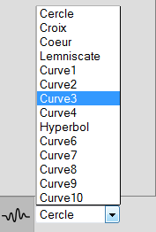

2D Space
There are two area dedicated to the 2D visualization. One is for the meridian, the other one is for the curve of revolution.
Meridian space

Curve of revolution space

Theses area are composed of 3 parts : The curve, The parameters, The type of curve
Curve

This area is used to display the 2D representation of the curve you want to use.
For the curve of revolution, the range are limited to -1, 1.
For the meridian, the range always start at 0. The maximum range is automatically computed based on the curve.
When the Hand Free Drawing mode is used (see Type of curve), it is possible to draw on this area.
Parameters

This area is used to display the parameters associated to the curve shown in the Curve area (see Curve).
By moving the sliders, it is possible to modify the corresponding parameter on the curve.
Type of curve

The application allows you to use three different kind of curves.
Predefined type
This type of curve is available for both, the meridians and the curves of revolution
-
Free hand type

This type of curve is only available for the meridian
It allows you to draw your own curve. By clicking at two different places on the canvas, the application will create a segment from those points.
By holding down the left mouse button, you'll be able to freely draw on the canvas.
You can clear the canvas by pressing the "Effacer" button.

It is also possible to close your curve by pressing the "Fermer la courbe" button.

Formula type

This type of curve is available for both, the meridian and the curves of revolution.
It allows you to type an equation for a curve to draw.
The meridian only accept equation of form F(x)= x.
The curve of revolution only accept of type F(x,y)= x + y.
3D Space

3D Visualization
Generation

There are two types of generation available.
Generation use (faster algorithm to model the surface using incremental algorithm).
Non optimized generation (slower algorithm testing every pixel).
Be aware that if your meridian is not conexe the faster algorithm may not generate all the voxels.
The resulting surface from the meridian applied to the curve of revolution is displayed on the 3D area.
There is a bounding box representing the limits of the space (the dimension) and a 3D landmark.

Interactions
There are multiple interactions possible with the 3D space.
Camera movements
By holding down the left mouse button, it is possible to rotate the camera around the surface.
By holding down the middle mouse button, it is possible to move the camera.3d space dimension

It is possible to modify the dimension of the 3D space.
Either by typing directly the values or by cliking the arrows. The maximum value for a dimension is 256.Connexity

There are three different type of connexity available : C26, C18, C6.
Voxel size

It is possible to modify the size of the voxels either by typing directly the values or by clicking the arrows.
The values must be between 0 and 1.-
MultiSlices

It is possible to slice the surface along an axis (X,Y or Z).
By moving the slider or typing a value in the corresponding field, the surface is sliced.
To validate the modifications, press enter in a field modified or click on the validate button.